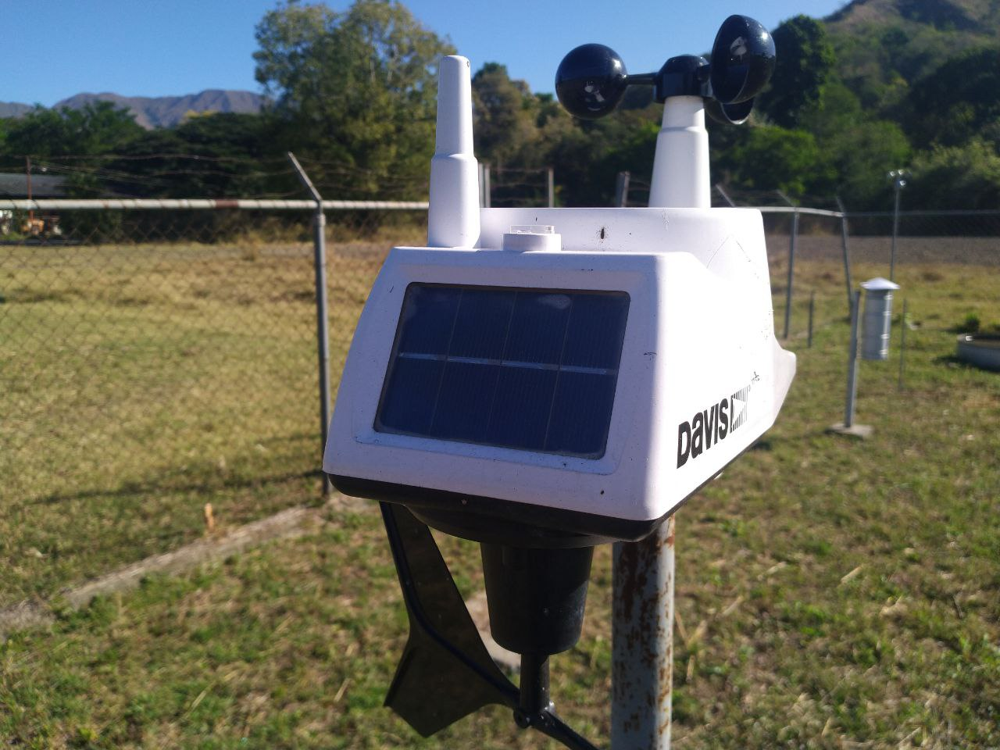
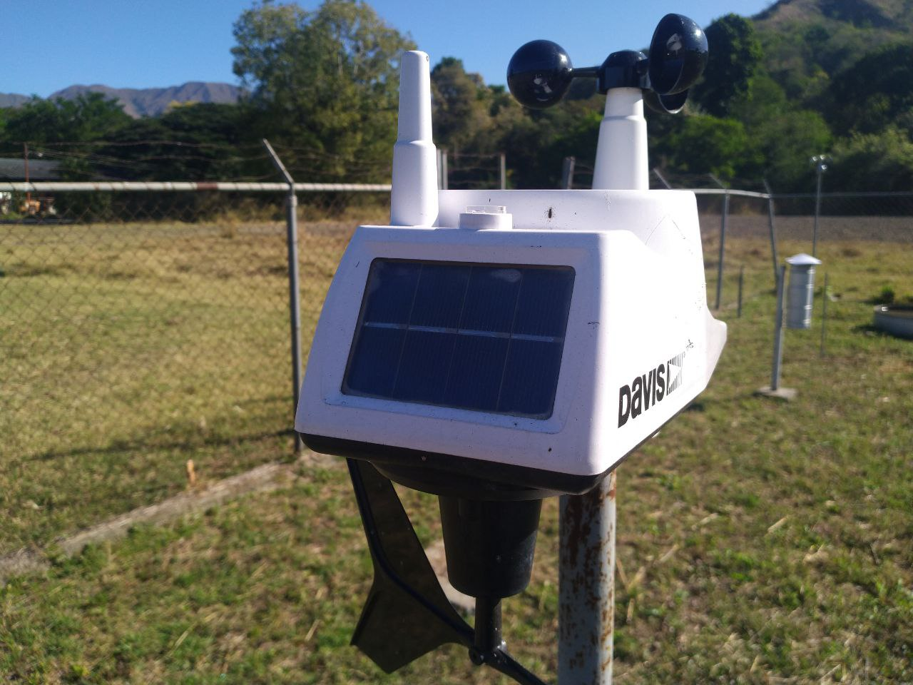

Reseña Histórica
La estación estacional se instaló el 1ero de Julio de 1995, los datos medidos en la Estación Convencional de la Facultad de Agronomía son: Radiación solar, insolación, temperatura y humedad relativa del aire, precipitación, evaporación y viento. Los registros pueden propocionarse con calidad garantizada en varias agrupaciones temporales (diario, decadiario, mensual, etc).
En la actualidad se encuentra instalada una estación autimatizada, fue puesta en marcha desde el 2 de agosto de 2022, mide temperatura máxima y mínima, punto de rocío, humedad, velocidad del viento, dirección del viento y lluvia.
 
